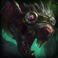
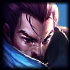

- 

- 
瘟疫之源
虽然出身只是一只瘟疫老鼠，但图奇却靠热情成为了一位污秽的鉴赏家，他可不介意弄脏自己的爪子。他使用一把炼金动力十字弩瞄准皮城人的镀金心脏，发誓要让这些生活在上层都市的人们知道他们真实的自我究竟有多么肮脏。他总是鬼鬼祟祟蹑手蹑脚，不是在地沟区翻来翻去，就是在别的地方深挖人类的垃圾堆，寻找被丢弃的宝藏……或者是一块发霉的三明治。
xx
yy
虽然出身只是一只瘟疫老鼠，但图奇却靠热情成为了一位污秽的鉴赏家，他可不介意弄脏自己的爪子。他使用一把炼金动力十字弩瞄准皮城人的镀金心脏，发誓要让这些生活在上层都市的人们知道他们真实的自我究竟有多么肮脏。他总是鬼鬼祟祟蹑手蹑脚，不是在地沟区翻来翻去，就是在别的地方深挖人类的垃圾堆，寻找被丢弃的宝藏……或者是一块发霉的三明治。
yy